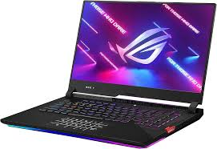
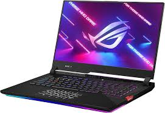

Welcome to the website about PC's
History of PC's
Personal computers (PCs) started to become widely available in the 1970s.
Before this time, computers were very large and expensive machines used
mainly by governments, universities, and large companies.
They were huge and filled entire rooms they definitely weren't designed for personal use.

The first personal computers
In the mid-1970s, technology improved and computers became smaller and more affordable.
One of the first successful personal computers was the Apple II, released in 1977.
In 1981, IBM released the IBM PC, which became very popular and helped set the standard for many modern computers.


Modern Personal Computers
Today, personal computers are smaller, faster, and more powerful than ever.
They are used for gaming, business, education, content creation, and entertainment.
With advanced processors, powerful graphics cards, and high-speed storage,
modern PCs continue to improve and play an important role in everyday life.

 
